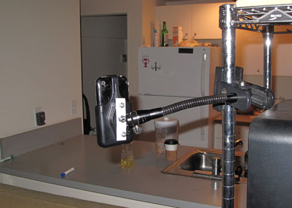

Support & FAQ
By Laan Labs
Need help with iTimeLapse? Check out our frequently asked questions below, or contact us for additional support.
Frequently Asked Questions
How do I get started with iTimeLapse?
Simply download the app from the App Store, open it, and tap the capture button to start recording. You can adjust the interval settings in the settings menu before you begin.
What interval should I use?
The ideal interval depends on your subject. For fast-moving subjects like clouds, try 1-3 seconds. For slower subjects like flowers blooming or shadows moving, try 30 seconds to several minutes between shots.
Do I need any accessories?
 While not required, we highly recommend using a tripod or mount for best results.
This ensures your device stays steady throughout the shoot, resulting in smooth,
professional-looking time-lapse videos.
While not required, we highly recommend using a tripod or mount for best results.
This ensures your device stays steady throughout the shoot, resulting in smooth,
professional-looking time-lapse videos.
How long can I record for?
Recording length is limited only by your device's storage space and battery life. For longer shoots, we recommend using a power source to keep your device charged.
What file format are the videos saved in?
Videos are saved in standard MP4 format, compatible with all major video players and editing software.
Recommended Accessories
 Check out these recommended accessories for the best time-lapse experience:
- Universal smartphone tripod mount
- Portable tripod with adjustable legs
- External battery pack for extended shoots
- Wide-angle lens attachment (optional)
Contact Us
Still have questions? Visit Laan Labs for more information and to get in touch with our support team.
 Support, FAQ
Support, FAQ
 November 27, 2025
November 27, 2025